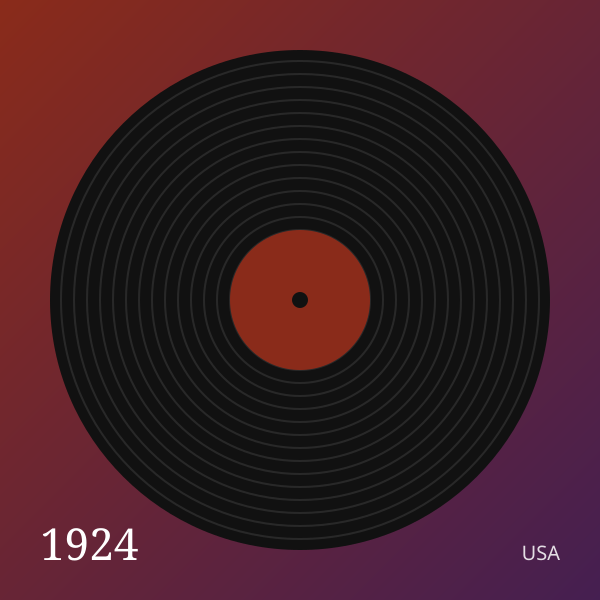

Ma Rainey, "Cell Bound Blues", 1924

Recording: Paramount 12257-A, New York, 16 Oct 1924; composer Ma Rainey (d. 1939)
Background: sung in the voice of a woman jailed after a killing; the accused answers back.
Music made where it wasn't wanted, and songs that kept the score.

Recording: Paramount 12257-A, New York, 16 Oct 1924; composer Ma Rainey (d. 1939)
Background: sung in the voice of a woman jailed after a killing; the accused answers back.